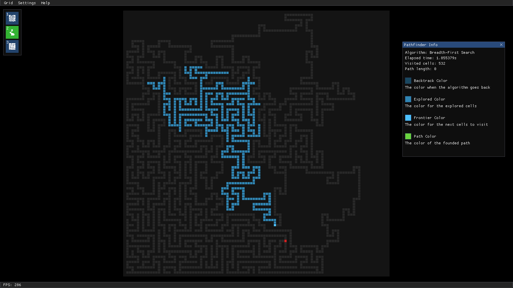
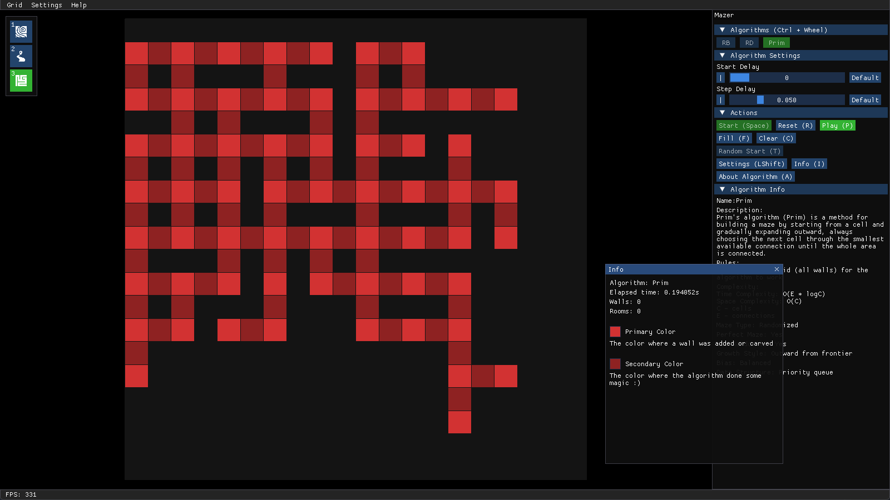
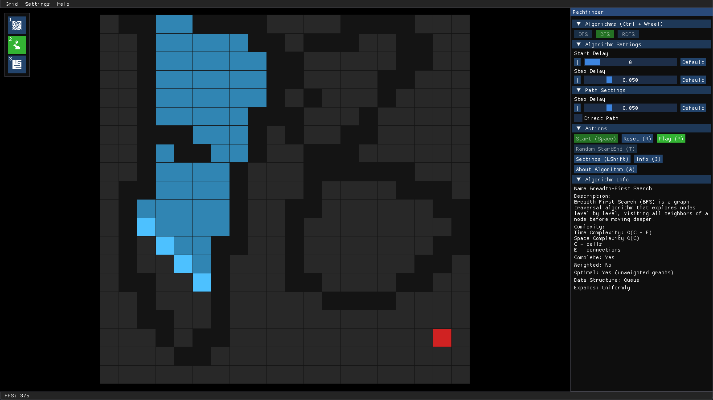
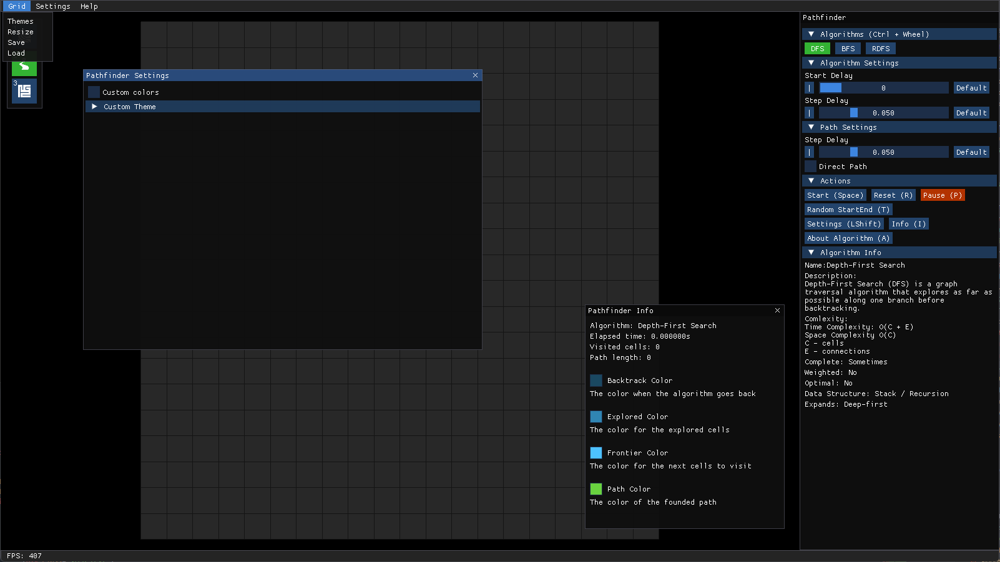
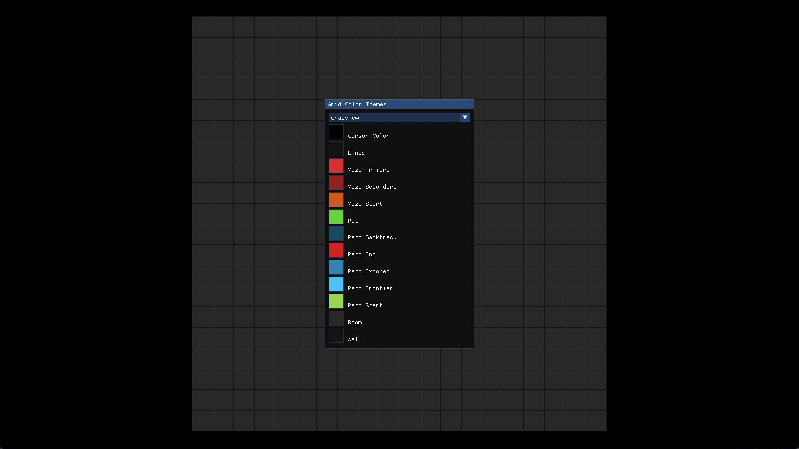

MPGrid is an interactive pathfinding and maze generation visualizer where you can create grids, place walls, generate mazes, and watch algorithms solve them step by step.



Mouse Controls
Interface Controls
Algorithm Controls
Modules


Menubar
The top menu contains grouped dropdown menus used for configuration and file actions.
- Grid: resize, save, load, theme switch
- Settings: background color, sound volume
- Help: keybinds and documentation
Sidebar
The sidebar is used to select modules and algorithms, and control execution tools.
- Pathfinding module
- Maze generator module
- Topography module
Grid (Main View)
This is the core workspace where all algorithms run.
- Place and remove walls
- Set start and end nodes
- Watch real-time visualization
Bottombar
Displays real-time performance and simulation data.
- FPS counter
Module List
Shows the active module, and use to select one of them.
- Topografy
- Pathfinding
- Mazer
Module Info Window
Displays information about the current running algorithm.
- Elapsed Time
- Path Length
- Visited Cells Count
- Carved/Placed Walls Count
Module Settings Window
Settings for the current active module.
- Custom Colors
Popup System
All configuration is handled through popup windows instead of separate pages.
- Grid (resize, save/load, theme)
- Settings (background color, sound volume)
- Help (keybinds, documentation)